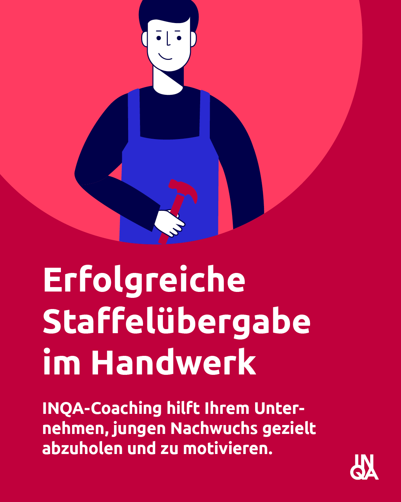
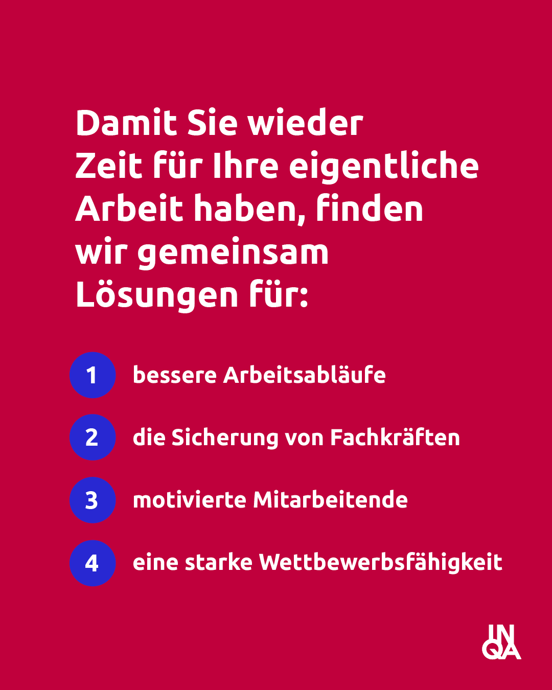
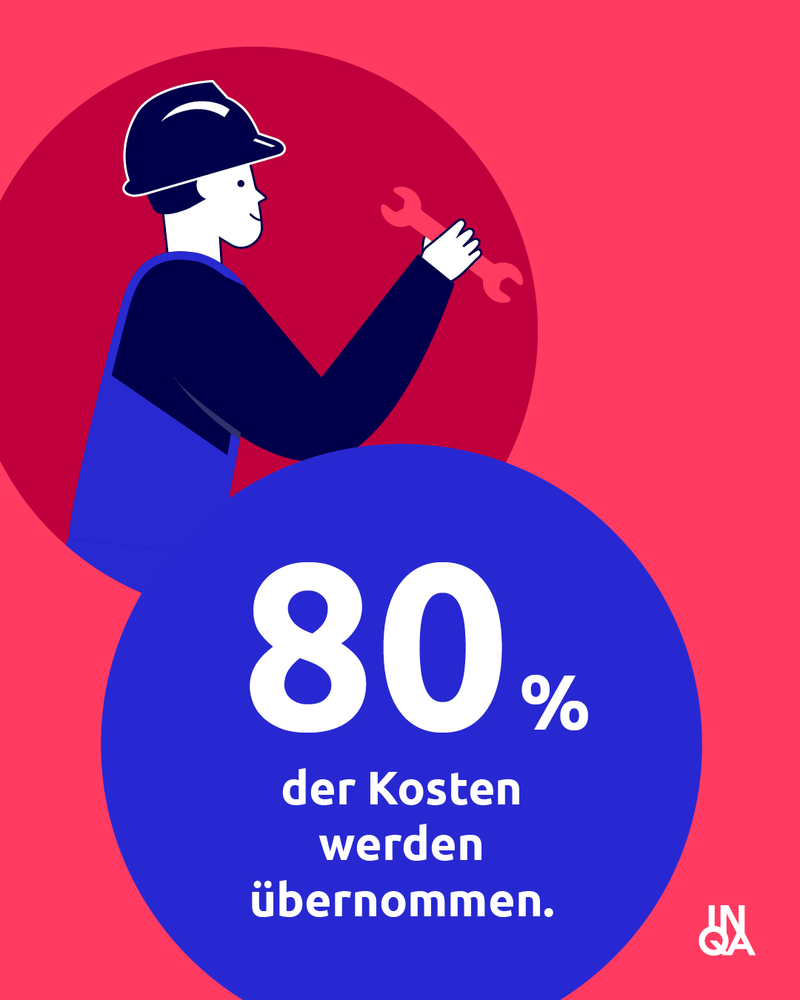
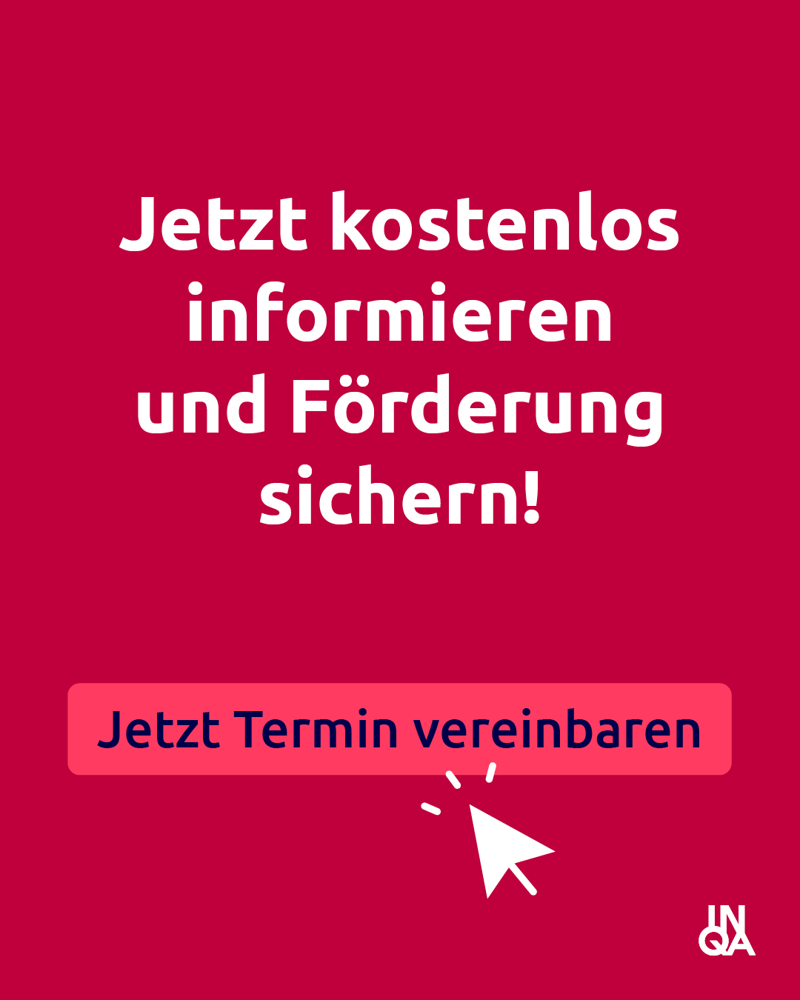
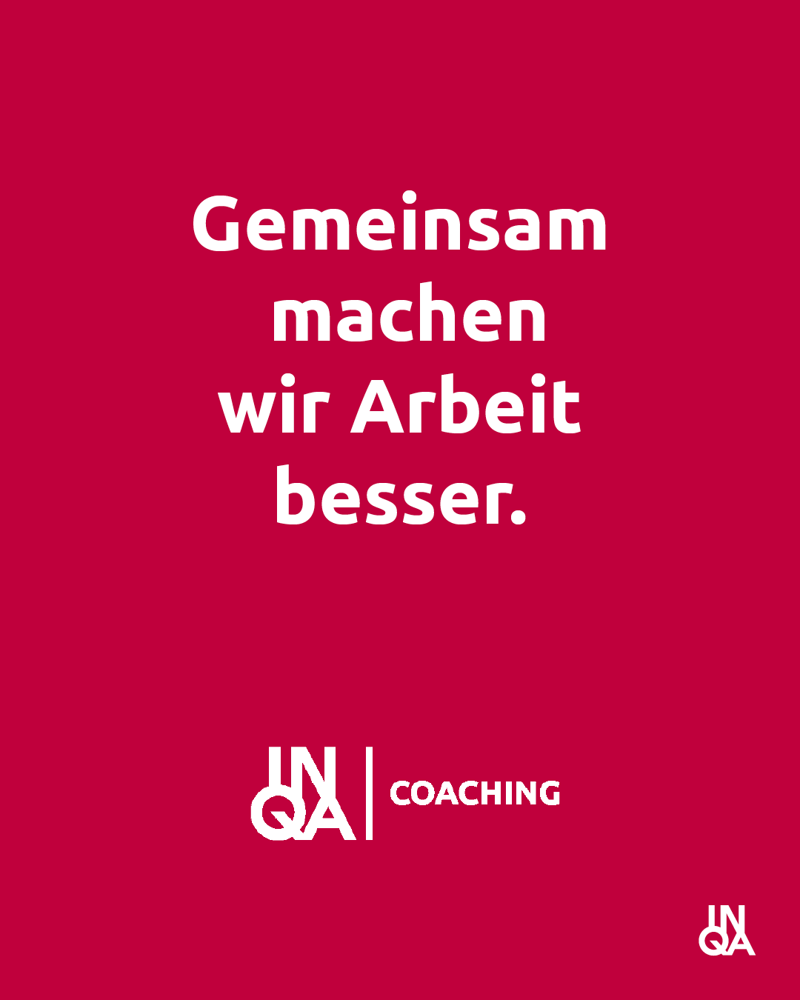

Als autorisierter INQA-Coach begleite ich Handwerksbetriebe durch geförderte Beratung – praxisnah, auf Augenhöhe, bis zu 80 % staatlich bezuschusst.
Gemeinsam machen wir Arbeit besser – für Sie und Ihr Team.





Das INQA-Coaching-Programm wird vom Bundesministerium für Arbeit und Soziales aus Mitteln des Europäischen Sozialfonds Plus gefördert. KMU und Handwerksbetriebe profitieren direkt.
Wo drückt der Schuh? Ich kenne die Herausforderungen im Handwerk.
Jungen Nachwuchs gewinnen, einarbeiten und langfristig binden – strukturiert und nachhaltig.
Attraktiver werden als Arbeitgeber: Wie Sie die richtigen Leute finden und halten.
Weniger Reibung, mehr Zeit für die eigentliche Arbeit – durch klare Prozesse und digitale Werkzeuge.
Neue Geschäftsmodelle, Innovationsstrategien und der Arbeitsplatz der Zukunft – konkret und umsetzbar.
12 Beratungstage in 3 Phasen – strukturiert und praxisnah.
2,5 Tage – Analyse Ihres Betriebs und gemeinsame Zielsetzung
7,5 Tage – Lösungen erarbeiten, erproben und verankern
2 Tage – Wissenstransfer und nachhaltige Verankerung
Autorisierter INQA-Coach
CogniCore IT Solutions GmbH
Köln
Als geschäftsführender Gesellschafter der CogniCore IT Solutions GmbH begleite ich seit 2020 kleine und mittlere Unternehmen auf ihrem Weg in die digitale Transformation.
Mein Schwerpunkt liegt in Prozessanalyse, Solution Design und der Einführung digitaler Werkzeuge zur Unterstützung von Veränderungsprozessen. Im INQA-Coaching kombiniere ich betriebswirtschaftliches Denken mit psychologischem Verständnis für Veränderungsprozesse.
Ein kostenfreies Erstgespräch – ohne Verpflichtung. Ich erkläre Ihnen, ob und wie INQA-Coaching für Ihren Betrieb passt.
Jetzt Termin vereinbaren →